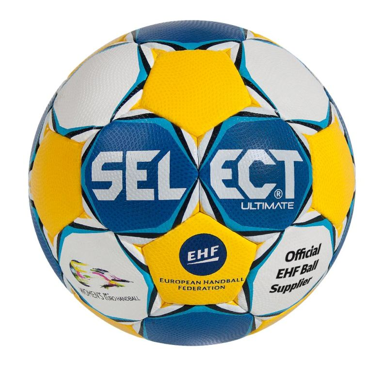

Экипировка и инвентарь для гандбола
- Гандбольный мяч
- Гандбольные ворота
- Сетка для игры в гандбол
- Защита на колени
- Защита на руки
- Мастика для гандбольного мяча
- Площадка для игры
Площадка для игры:
Площадка для гандбола
Игра происходит в закрытом помещении на прямоугольной площадке размером 40×20 м. Вокруг площадки должна находиться зона безопасности размером не менее 1 м вдоль боковых линий и не менее 2 м за линией ворот. Длинные границы площадки называются боковыми линиями, короткие — линиями ворот (между стойками ворот) или внешними линиями ворот (за пределами ворот). Все линии являются частью площадей, которые они ограничивают. Ширина всех линий разметки составляет 5 см (исключение — ширина линии ворот между стойками составляет 8 см).
К каждой из линий ворот примыкает площадь ворот, ограниченная линией площади ворот, проводимой следующим образом: непосредственно напротив ворот, на расстоянии 6 м от линии ворот проводится параллельная ей линия длиной 3 м. Концы этой линии соединяются с внешними линиями ворот дугами радиусом 6 м, с центром у внутренних углов стоек ворот.
На расстоянии 3 м от внешней границы линии площади ворот параллельно ей проводится прерывистая линия свободных бросков (или
9-метровая линия). Длины сегментов этой линии и расстояние между ними составляют 15 см.
Напротив линии ворот, параллельно ей, на расстоянии 7 м по центру ворот проводится 7-метровая линия длиной в 1 м.
Напротив линии ворот, параллельно ей, на расстоянии 4 м по центру ворот проводится линия ограничения вратаря (4-метровая линия) длиной 15 см.
Середины боковых линий соединяются центральной линией.
Части одной из боковых линий от центральной линии до расстояния 4,5 м от неё называются линиями замены каждой из команд. Границы линий замены отмечаются линиями, проходящими под прямым углом к боковой линии и продолжающимися на 20 см от неё в обе стороны.
Гандбольные ворота:
Гандбольные ворота
По центру каждой линии устанавливаются ворота. Они должны быть надёжно закреплены. Внутренние размеры ворот: ширина 3 м, высота 2 м. Стойки ворот и перекладина должны иметь квадратное сечение со стороной 8 см, при этом задняя кромка стоек должна совпадать с внешней кромкой линии ворот. Стойки ворот с трёх видимых с площадки сторон должны быть попеременно окрашены в два контрастных цвета, отличающихся от цветов площадки. На воротах должна иметься сетка.
Гандбольный мяч:

Гандбольный мяч
- Окружность 50—52 см, масса 290—330 г для команд мальчиков 8—12 лет и девочек 8—14 лет.
- Окружность 54—56 см, масса 325—375 г для женских команд старше 14 лет и мужских команд 12—16 лет.
- Окружность 58—60 см, масса 425—475 г для мужских команд старше 16 лет.
Так, мяч должен быть подобран в соответствии с возрастом игроков, а также изготовлен из нескользящих материалов – кожи или полиуретана.Гандбольный мяч изготавливают из кожи или синтетического материала. Он должен быть круглым и не быть скользким или блестящим. Гандбольные мячи делятся на мячи для начинающих и профессионалов, на матчевые и тренировочные.По способу производства: машинного и ручного пошива.
Сетка для игры в гандбол:
Сетка для гандбола
При выборе сетки руководствуйтесь следующими параметрами:
- "материал изготовления – чаще всего это капрон или полипропилен;
- надежность производителя: только качественные сетки сохранят прочность, даже если будут подвергаться воздействию неблагоприятных погодных факторов;
- толщина нити – чем она больше, тем прочнее и долговечнее будет сетка. "
Компания «СпортСтандарт» предлагает сетки, которые подходят для стандартных гандбольных ворот. Они могут использоваться и для тренировок, и для официальных игр, так как соответствуют всем установленным стандартам. От того, как играют в гандбол начинающие или любители, насколько экипировка соответствует установленным правилам, зависит безопасность игры. Компания «СпортСтандарт» обеспечивает высокое качество инвентаря, а также оптимальные цены. Все детали вы можете уточнить у наших специалистов по телефонам, указанным на сайте.
Защита на колени:
Защита на колени
- Наколенники - это прежде всего безопасность и долголетие в спорте. Они приводят связки коленного сустава в рабочее состояние, держат оптимальную температуру на протяжении всей тренировки, ускоряют восстановление после. Ещё они стабилизируют колено, чтобы оно не болталось в движении, частично берут на себя амортизацию.
Наколенники являются важной частью экипировки, они
предназначены для защиты, улучшения сцепления с полом, поддержки суставов.
При выборе наколенников следует учитывать следующее:
Наколенники должны плотно прилегать к телу, но не сдавливать слишком сильно, размер должен быть подобран таким образом, чтобы они не мешали движению и не вызывали дискомфорт.
Рекомендуется выбирать изделия из прочных и легких материалов, таких как нейлон или полиэстер, они должны быть достаточно прочными, чтобы выдерживать многократные стирки и использования, но при этом не должны быть слишком тяжелыми.
Защита на руки:
Защита на руки
- Налокотники - это защитная экипировка, которая надевается на локти для предотвращения травм и снижения риска повреждений. Они предназначены для амортизации и защиты локтевых суставов при падениях или контакте с жесткими поверхностями.
Налокотники являются важной частью экипировки, хотя некоторые предпочитают играть и без них, но они
предназначены для защиты, улучшения сцепления с полом, поддержки суставов.
При выборе налокотников следует учитывать следующее:
Налокотники должны плотно прилегать к телу, но не сдавливать слишком сильно, размер должен быть подобран таким образом, чтобы они не мешали движению и не вызывали дискомфорт.
Рекомендуется выбирать изделия из прочных и легких материалов, таких как нейлон или полиэстер, они должны быть достаточно прочными, чтобы выдерживать многократные стирки и использования, но при этом не должны быть слишком тяжелыми.
Мастика для гандбольного мяча:
Мастика для мяча
- Мастика, смола, "липа" — клейкая субстанция, которая обеспечивает сцепление мяча с рукой — без преувеличения вывела гандбол на новый уровень.
|